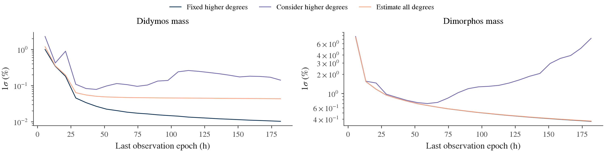
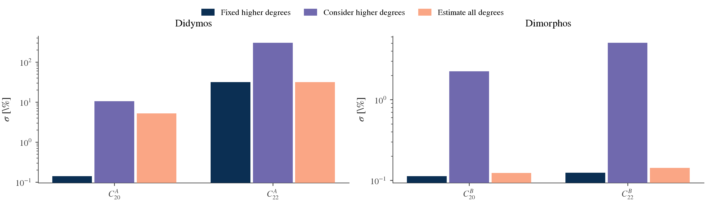
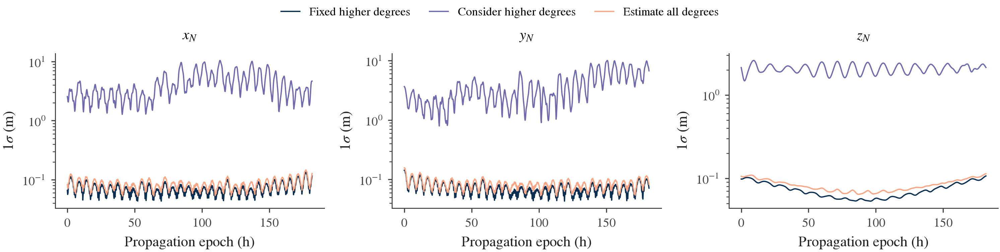

Consider parameters and covariance histories
Consider analysis quantifies the effect of parameters held at nominal values in an estimator. Covariance histories answer either when observations constrain a quantity or how uncertainty evolves after an information set is fixed. BASCO implements these operations separately and retains complete state, mass, field and consider cross covariance.
These operations reuse a LinearizedStudy. Changing noise, priors, consider roles or history cutoffs does not propagate the dynamics again. The source linearization must already contain every required derivative direction. Changing the gravity model, nominal bodies or derivative directions requires a compatible new linearization.
Choose estimated, fixed or considered parameters
| Role | Statistical treatment |
|---|---|
| Estimated | Fit the coordinate from observations and any independent prior equations. |
| Fixed | Hold the coordinate exactly at its nominal value; assign no uncertainty. |
| Considered | Hold the coordinate at its nominal value in the estimator while propagating an explicitly supplied uncertainty. |
Consider coordinates are selected from the full retained layout. Every remaining coordinate is estimated, including retained initial-state and observation-nuisance coordinates. Changing the role does not change the nominal dynamics or the units of a coordinate. Parameters and gravity order explains how to retain the desired physical derivative directions before assigning uncertainty roles.
The following fragment assumes rows and bc from the Hera study. It holds the primary mass at nominal while accounting for an illustrative, independent external mass uncertainty of 1%. That percentage is a demonstration input, not a measured Hera constraint.
mass_index = rows.layout.labels.index("primary.mass")
mass_uncertainty = bc.ConsiderParameters(
labels=("primary.mass",),
units=("kg",),
covariance=[[(0.01 * rows.nominal[mass_index]) ** 2]],
name="external primary mass",
source="illustrative independent 1% mass uncertainty",
)
considered = rows.covariance(consider=mass_uncertainty, priors=())
print(considered.summary())
print(considered.mass_properties().summary())
priors=() deliberately requests no estimated-parameter priors in this illustration. A degree-4 fit without such priors may leave some combinations unresolved; report availability identifies that outcome. To retain independent field knowledge, supply the intended prior producers explicitly. Do not represent the same external uncertainty both as a consider covariance and as independent prior information.
ConsiderParameters accepts a correlated positive-semidefinite covariance. Its row and column order follows labels, and each entry has the product of the corresponding physical units. Labels must exist in rows.layout; units must match exactly. Zero variance is allowed. The consider distribution remains unchanged by the observations.
ConsiderParameters.from_priors(priors, layout, nominal, labels=...) constructs an external distribution from centered independent prior equations for the selected coordinates. It combines mapped equations and preserves correlations. It rejects equations coupled to outside coordinates, shifted means and incomplete rank; it does not silently condition an arbitrary joint distribution. Remove those same selected equations from the estimator when using the external distribution. The Hera runner shows this separation for degree-3/4 moments.
Equations and error sign
Let the whitened observation and permitted prior equations be
y=A x+B c+\epsilon,\qquad E[\epsilon\epsilon^T]=I,\quad E[cc^T]=C,\quad E[\epsilon c^T]=0.
x contains the estimated deviations and c the true deviations from the fixed consider nominal. With error defined as truth minus estimate, a full-column-rank batch estimator has
e_x=x-\widehat{x}=-A^+\epsilon+Sc,\qquad S=-A^+B,
P_f=A^+(A^+)^T,\qquad
P_{xx}=P_f+SCS^T,\qquad P_{xc}=SC,\qquad P_{cc}=C.
Pf is conditional covariance with the consider coordinates known exactly. Pxx includes their effect on the stated estimator. The derivative of the fitted estimate with respect to a true consider perturbation has the opposite sign to S. The distinction matters for cross covariance and downstream outputs.
For output error Jx ex + Jc c, BASCO evaluates
P_q=J_xP_fJ_x^T+(J_xS+J_c)C(J_xS+J_c)^T.
The direct Jc term is essential. In the scalar example y = x + c + noise, S = -1. The output x + c has Jx = Jc = 1, so its consider contribution cancels. Mapping only Pxx would miss this cancellation. The numerical implementation uses scaled square-root solves; these equations do not prescribe forming normal equations.
This is a fixed-estimator batch error-covariance analysis. It does not change the estimator gain to include consider uncertainty and does not implement a recursive Schmidt filter. All data and prior equation errors are assumed independent of the consider error. A coupled prior can express x - L c = u with an independent residual u; arbitrary correlations between measurement noise and c need an additional explicit statistical model.
Prior equations retain both their estimated and consider derivative columns. A prior involving only considered coordinates does not update C. Adding the external C as more information would change the analysis and may double count knowledge.
Read a consider result
ConsiderResult retains the full original layout so physical reports include direct consider effects:
| Attribute | Meaning |
|---|---|
layout |
Full source order, including estimated and considered coordinates. |
estimated_layout |
Coordinate order actually fitted. |
information_result or conditional |
Conditional estimated-space covariance, spectra, ranks and null directions. |
sensitivity |
Estimated-error response S, with estimated rows and consider columns. |
estimated_covariance |
Estimated-coordinate covariance including consider uncertainty, when fully available. |
estimated_consider_covariance |
Error cross covariance SC, when fully available. |
joint_covariance |
Complete estimated/consider covariance in the original layout, when available. |
The consider result's ranks describe the estimated space, not a fit of the considered coordinates. full_rank means all estimated coordinates are supported conditional on c. It does not mean the observations estimated c. Use summary() or estimated_layout when interpreting the rank denominator.
mass_properties(), degree2(), harmonics(...) and derived(...) use the complete error covariance. When the estimated problem is deficient, only output Jacobians that annihilate its nullspace receive finite uncertainty. A pure considered output can remain supported even if an estimated direction is unresolved. Adding C cannot make an unidentified estimated coordinate observable.
Accumulate observations at a fixed reference epoch
An accumulated history uses observations with epoch at or before each selected cutoff. All results describe the same reference-epoch coordinates. A cutoff is the last allowed observation epoch; it is not the epoch to which the state covariance has been propagated.
import numpy as np
cutoffs = np.linspace(rows.transport.epochs[0], rows.transport.epochs[-1], 17)
history = rows.covariance_history(
checkpoints=cutoffs,
consider=mass_uncertainty,
priors=(),
solver=bc.SquareRootSolver(),
)
mass_history = history.report(lambda result: result.mass_properties())
This fragment explicitly chooses the joint square-root rank policy to allow early unsupported directions. It is not the paper's nuisance-projected solver policy. For a Hera reproduction using NuisanceProjectedSolver, choose checkpoints after the local state/nuisance data block becomes identifiable. That solver can reject a prior-only or short prefix; the error identifies the cutoff, scalar row count and selected solver. BASCO does not silently change solvers or thresholds to manufacture finite uncertainties.
CovarianceHistory contains epochs, results, scalar-row counts, reference_epoch_s and provenance metadata. Default checkpoints are sorted distinct observation epochs. Every simultaneous row enters together. Explicit cutoffs may precede the first observation, producing prior-only results when the selected solver supports them. Empty data default to one reference-epoch, prior-only result. Choose a modest explicit checkpoint set to limit repeated factorizations.
Each checkpoint repeats the selected batch solve exactly on its included rows. Independent priors enter once per checkpoint. For correlated observation noise, BASCO selects the original covariance marginal R[I,I] before whitening; it does not slice a globally whitened design that may contain future information. Custom noise providers must implement an explicit subset(indices) returning that marginal in the requested row order.
history.report(callback) applies the same physical report to every prefix. history.derived(labels, values, units, jacobian, ...) applies a fixed custom reference-epoch output map. Both return a DerivedCovarianceHistory, with per-checkpoint values, covariance, status, Jacobians and sigma.
At full rank and fixed support, adding independent information cannot increase ordinary conditional covariance. Numerical support can change at relative rank cutoffs. Total consider covariance can increase as the estimator's sensitivity to fixed uncertain parameters changes; monotonic improvement is not guaranteed.
Propagate one fixed information set
A propagated history holds the data set fixed and maps its covariance to physical output epochs. This answers a different question from accumulating observations. For example, the following computes uncertainty in the binary relative position using all information in considered:
relative_position_history = rows.propagated_covariance(
considered,
bc.RelativePosition(sigma=1.0),
)
primary_position_history = rows.propagated_covariance(
considered,
bc.PrimaryBarycentricPosition(sigma=1.0),
)
These are ideal observable error histories: nominal values default to zero, and the channel's observation sigma is not added. The primary barycentric map includes direct mass-ratio dependence. Use channels without instrument nuisance biases. The result must belong to the same retained linearization. State, parameter and consider cross terms remain in the map.
The helper uses the retained transport grid and performs no additional dynamics integration. Built-in solvers retain a supported covariance factor directly from their square-root calculation. The new history mapper forms (J F)(J F).T from that factor, preserving the selected support. It does not reconstruct a factor by decomposing a previously rounded covariance. This matters for long, sensitive trajectories where large state/parameter terms can cancel in J P J.T, producing negative variances or inaccurate cross covariance. Symmetrizing that answer would not recover the lost information.
CovarianceResult.derived_stable(...) exposes the same factor-based map for a standalone output; the original derived(...) numerical path is retained for compatibility. Consider outputs combine the conditional source factor with the independent consider factor, retaining direct-parameter cancellations. A custom result without a source factor can still use its own derived(...); history metadata records that the stable factor mapping is unavailable. Mapped records reject negative variances and materially asymmetric or indefinite covariance rather than clip eigenvalues or add artificial noise. A finite covariance alone does not establish numerical accuracy.
For an explicitly supplied full-source map, use propagate_covariance. This interface fragment assumes the caller has computed output_epochs, output_values and output_jacobians for the declared quantity:
mapped = bc.propagate_covariance(
considered,
epochs=output_epochs,
jacobians=output_jacobians,
labels=("custom.x", "custom.y", "custom.z"),
units=("m", "m", "m"),
values=output_values,
information_cutoff_s=last_observation_epoch,
reference_epoch_s=rows.transport.epochs[0],
conventions={"definition": "caller-defined physical position"},
)
For K epochs and N full source coordinates, the Jacobians have shape (K, 3, N) and nominal values (K, 3). Columns include all initial-state, nuisance, estimated-parameter and considered-parameter directions in result.layout order. Include both transported sensitivities and direct parameter dependence. Known source reference/cutoff epochs cannot be relabeled inconsistently.
information_cutoff_s records the fixed information set; it does not select observations or add measurements. Mapping an all-data batch result to earlier physical epochs uses future observations relative to those epochs. It is not a causal filter history. No process noise is introduced.
To map an earlier information set to later retained epochs, pass a prefix result instead, for example rows.propagated_covariance(history.results[5], bc.RelativePosition()). Its known cutoff is retained automatically. This is a fixed-data prediction within the transport interval; it performs no later measurement updates.
covariance[k] stores all output cross terms within epoch k; covariance between different epochs is not stored. Null directions remain unavailable at every mapped epoch unless the output annihilates them. Relative percentage uncertainty is undefined for zero nominal values, so plot ideal error-coordinate histories in absolute units.
Export and plot histories
Mapped histories use a separate atomic export, with human-readable axes/provenance, a long-form uncertainty table and checksummed numerical arrays:
from pathlib import Path
folder = bc.export_covariance_history(
mass_history,
Path("results/hera-consider-mass-history"),
title="Hera mass uncertainty by observation cutoff",
)
restored = bc.read_covariance_history(folder)
hera-consider-mass-history/
README.md
history.json
uncertainties.csv
manifest.json
arrays/
metadata.json
epochs_s.npy
nominal_values.npy
covariance.npy
jacobians.npy
export_covariance_history accepts a mapped history; call .report(...) or .derived(...) first for accumulated results. Existing destinations are refused. read_covariance_history verifies hashes before reconstructing the immutable record. Unavailable covariance entries remain NaN in numerical arrays; CSV uncertainty cells are empty with explicit status. Export performs no solve, propagation or derivative validation.
Use export_study(rows, result, ..., include_factor=True) to preserve the full source factor alongside its covariance and nullspace. A saved rounded covariance alone may not reproduce stable new physical maps on a long chaotic trajectory. The Hera runner requests the factor explicitly; ordinary export defaults remain compatible.
Figures use the ordinary BASCO renderer and theme:
from basco.history_plotting import covariance_history_plot
from basco.plotting import render
definition = covariance_history_plot(
{"External primary mass uncertainty": mass_history},
labels=("primary.mass", "secondary.mass"),
relative=True,
time_unit="h",
quantity_names={"primary.mass": "Didymos mass", "secondary.mass": "Dimorphos mass"},
)
figure_folder = Path("results/hera-history-figures")
figure_folder.mkdir(parents=True, exist_ok=True)
render(None, figure_folder, bc.PlotTheme(tex=False), plots=(definition,))
covariance_history_plot compares named histories, gives each requested quantity its own panel and preserves unavailable directions as gaps. Use relative=False for absolute standard deviations. time_unit accepts seconds, hours or days. Accumulated-data and fixed-information histories require separate figures. The plot constructor returns a reusable PlotDefinition; the renderer controls file formats and the common scientific style. External TeX is optional through PlotTheme(tex=True) when installed.
Hera example and numerical evidence
The runnable Hera uncertainty example composes the same public operations with the Didymos–Dimorphos model. The original Hera reproduction remains the reference for the paper's settings and Table 2 results. Assigning consider roles creates a new statistical experiment; it does not by itself reproduce a new paper figure or establish a landing footprint.
The accepted example uses AC3 full tumbling, degree-6 Hou gravity, derivative directions through degree 4, RK4 75 s and the paper's nominal 16-orbit interval. The 900 s grid provides 8,724 scalar observations through 654300 s. The coordinate reference is 0 s. Twenty-four prefixes use the same nuisance-projected solver policy after local coordinates become identifiable.
Three experiments share the same nominal dynamics and measurement rows:
| Higher-degree treatment | Estimated coordinates | Degree-3/4 uncertainty |
|---|---|---|
| Fixed | 32: initial state, barycenter nuisance, both masses and degree-2 moments | Zero; 50 higher-degree moments held exact |
| Considered | The same 32 | Correlated external covariance from the paper's higher-degree harmonic and independent raw-moment prior equations |
| Coestimated | All 82 | All moments fitted with the original paper priors |
The fixed and considered estimators keep only degree-2 prior information. Their external higher-degree distribution is not also fitted as a prior. The considered case is fixed-estimator analysis; it does not reweight observations using that uncertainty.
Final default AD mass standard deviations:
| Higher-degree treatment | Didymos, % of mass | Dimorphos, % of mass |
|---|---|---|
| Fixed | 0.0103133 | 0.369268 |
| Considered | 0.141883 | 7.22531 |
| Coestimated | 0.0434185 | 0.373392 |

The growing considered uncertainty is an estimator-sensitivity effect. The external distribution is unchanged at every cutoff. Fixing the higher field exactly understates the error of an estimator exposed to the declared uncertain higher field. Coestimating it lets the measurements constrain those directions.


The last figure maps one all-data result over physical epochs. Component sigmas span approximately 0.0433–0.1443 m (fixed), 0.795–10.446 m (considered), and 0.0520–0.1577 m (coestimated). These describe the binary relative orbit, not a CubeSat descent or landing footprint.
Both the fresh default AD and identity-checked native runs reproduce all nine printed AC3 Table 2 entries in the coestimated case. Their new mass histories agree to at worst 1.20e-4 relative sigma, and position covariance histories to 3.65e-5 relative matrix norm, within the existing 1e-3 long-chaotic-Hera acceptance. The final full suite passes 396 tests with AD/plotting; native and AD reference snapshots remain bitwise unchanged. See complete acceptance and reproducibility commands.
python3 -B tools/dev.py run --plot examples/hera_uncertainty.py \
--output "$PWD/results/hera-uncertainty"
--native selects a fresh native propagation. --reuse-native PATH reuses a completed checked native BASCO transport. --reuse-transport PATH reuses a completed transport matching the selected provider. Use a new output folder; the runner checkpoints transport before analysis and refuses to overwrite existing artifacts. Each descriptive case folder contains the standard study export plus mass-history/ and relative-position-history/; shared figures are in figures/. The rendering tool regenerates the figure recipe from verified exports without solving again.
References and limits
BASCO's batch consider formulation is documented against Hinks and Psiaki, A Multipurpose Consider Covariance Analysis for Square-Root Information Filters and the inspected SCARABAEUS batch implementation. The latter maps final batch covariance to epochs; BASCO separately exposes observation-prefix histories. NASA Navigation Filter Best Practices describes consider filtering and cross-covariance principles; BASCO's current batch analysis does not claim that recursive algorithm.
The equation contract and research record records the inspected revision, assumptions, retrieval date and independent validation requirements. Sequential filters, process noise and independent multi-arc prefix histories remain separate work. The next application is described in CubeSat descent and landing covariance.